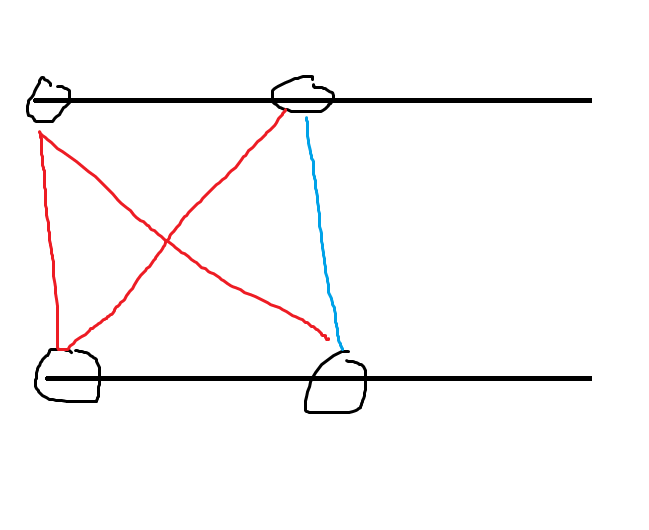

比赛链接：https://qoj.ac/contest/1350
怎么队长这么喜欢霓虹景的比赛。
开局队长秒 E ，我和队友看了 J ，发现 Purfer 板子题，上机写 WA 了一发，原因：没判数量为 $0$ 的情况，因为可能不存在一棵树有这样子的度数。
后面队长给队友说了一个 L ，说这是个边际距离简单题，然后上机下机 balabala ，最后留下名言：以后这种贪心题应该想好了再上机，没想好就上有点唐了。
期间我和队长聊起 B ，然后交流了一下，大概做法是二分 + 并查集，还有个曼哈顿距离 $\ge D$ 的经典 trick ，拆成四种式子分别加，只会算少不会算多，队长说他搞一下，我先去看了 M ，M 是个构造，因为我是构造苦手，而且队长好像搞 B 搞晕了，就和他交换了题目。
后面发现 B 的四种情况的两两连边，只需要考虑至少有一方为最大值的情况就行了，上机结果 T 了，后面发现是一个全新的错误：
二分如果 $r$ 的量级为 $210^{9}$ ，那么有可能在算 $mid$ 的时候 $210^{9}+2*10^{9}$ 爆 int ，所以应该写成：
学到了学到了。结果这一场的后面又犯了一个这样的错误
B AC 后，L 也 AC 了，我在看 C ，感觉是疑似背包的东西，这时队长声称，I 是 CF div2 D 的 SB 题，跟我讲了一遍做法，我当时觉得并不好写，而且手里还有 C ，拒绝上机的，队长遂找到 Imakf ，和其交流，Imakf 也觉得好写，遂上机。
这时一个小时过去了。
然后我和队长交流 C ，我声称背包大小只有 $±2V$ ，队长认同了，也许？然后因为没有机时，我去看 D 了，感觉 D 是一个 dp 就能完成，注意到匹配不能唯一决定的情况当且仅当两个序列后面的一段都是相同的，当某个串跳出这一段的时候，就又能唯一确定匹配了，而这一段的匹配数量是一个折线法就能完成的事，需要枚举没跳出这一段的长度，因此时间复杂度是 ：$O(n^2+\mathrm{极长相等的一段的长度的平方和})$ ，注意到后者也是至多 $O(n^2)$ 的，所以可以 AC 。（说起来特别唐的是，复杂度我其实算错了，按照我当时的想法，复杂度应该是 $O(n^2+\mathrm{极长相等的一段的长度的和})$ ，但我当时其实少计算某个部分的复杂度，所以真正正确的复杂度还是 $O(n^2+\mathrm{极长相等的一段的长度的平方和})$ 的，只能说恰好负负得正了，运气真好）
然后 Imakf 感觉 I 有点细节，下来交流，我上机把 C，D 写了，但是这里我犯了一个错误，就是应该我在 AC 了 C 的时候，应该让队友上机，而不应该连续上机。
一个简单的情形，如果队里两个人手里都有 $2$ 个题，那么应该是一人轮流上一个题，原因是：
- 首先保证一个人不会在机上红温。
- 其次保证每个人在一个比较长的时间段都有在机下的时间，能够保证每个题目每个人都能给出他的观察，防止出现能给出关键观察的人在机上的情况。
- 同时如果一个人在机上写错了什么东西，打印下来看，另外一个人可以直接上机，不会浪费机时，如果一个人先上完了所有的题，那么后一个人一旦在机上遇到错误，需要下机的时候，队伍里没有人手里有题，机时就会空缺，这是十分严重的问题。
总之这里确实犯了一个决策上的错误，只能说当时手感火辣，当了机霸。
在我写 C,D 的期间，队友们讨论出了 H 。
Imakf 上机写了一下 I ，第一发 RE ，此时两小时，半个小时后过了，感觉这题确实难写，队长说好写只能说队长太牛了，不过我确实不太会写代码。
Imakf 搞 I 的期间我想了想 H ，发现好像是简单容斥 dp ，两点半的时候上机过了，还犯了个错误，我以为回到原点是四个方向的步数一样，实际上是四个方向两两步数一样，只能说唐了。
队长上机写 H ，我和 Imakf 开始讨论 G ，我们得出结论，这道题目是史，也有可能是我们做法不太行，反正是容斥 + 讨论 + 拉格朗日插值。
三个小时，队长过 H ，接下来半个小时，我思考怎么写 G ，队友们讨论 A ，三个半小时过了。
最后一个半小时我没有写出 G ，队友没做出 M ，爆。
感觉比较大的问题就是连续上机，其余没啥大问题。
J
不会做的建议认真学习 Prufer 序列。
B
先二分 $D$ 。
显然只有四种情况：$±x±y$ ，讨论 $x+y$ 和 $-x-y$ 的情况。
先从大到小排序，注意到有下面这张图成立，所以只用关心和最大值有关的连边。

时间复杂度：$O(n\log{n})$
1
2
3
4
5
6
7
8
9
10
11
12
13
14
15
16
17
18
19
20
21
22
23
24
25
26
27
28
29
30
31
32
33
34
35
36
37
38
39
40
41
42
43
44
45
46
47
48
49
| #include<bits/stdc++.h>
using namespace std;
const int N = 1e5 + 5;
int fa[N];
int findfa(int x){return fa[x] == x ? x : fa[x] = findfa(fa[x]);}
bool mer(int x, int y){
x = findfa(x);
y = findfa(y);
if(x != y) fa[x] = y;
else return 0;
return 1;
}
struct node{
int val, id;
}a[4][N];
int n;
bool check(int D){
for(int i = 1; i <= n; i++) fa[i] = i;
int cnt = 1;
for(int i = 0; i <= 3; i++){
int j = 3 ^ i;
for(int k = 1; k <= n; k++){
if(a[i][1].val + a[j][k].val >= D) cnt += mer(a[i][1].id, a[j][k].id);
}
}
return cnt == n;
}
int main(){
cin >> n;
for(int i = 1; i <= n; i++){
int x, y;
cin >> x >> y;
a[0][i] = {x + y, i};
a[1][i] = {x - y, i};
a[2][i] = {- x + y, i};
a[3][i] = {- x - y, i};
}
for(int i = 0; i <= 3; i++){
sort(a[i] + 1, a[i] + n + 1, [](node x, node y){return x.val > y.val;});
}
int l = 0, r = 2e9, mid, ans = -1;
while(l <= r){
mid = l + (r - l) / 2;
if(check(mid)) l = mid + 1, ans = mid;
else r = mid - 1;
}
cout << ans << "\n";
return 0;
}
|
C
首先，注意到初始点在 $x$ ，则跳跃若干次后的坐标形如：
前面部分是可以类似背包一样跑的，或者说类似同余最短路那样跑，具体来说，以 $k$ 的奇偶性和 $\sum\limits_{i=1}^{k}a_{b_{i}}*(-1)^{i-1}$ 的数值跑宽搜。
现在有一个关键，这个宽搜的大小多大，直觉告诉我是 $±2V$ ，这样时间复杂度是：$O(nV)$ 的。
后面证明了。
具体来说，我们证明，若终点的绝对值 $\le V$ ，则一定存在一个顺序使得 $\forall 1\le j\le k,|\sum\limits_{i=1}^{j}a_{b_{i}}*(-1)^{i-1}|\le 2V$ ：
证明方法为设现在的值为 $x$ 。
设正贡献的数组为 ：$a_{1}\le a_{2}\le …\le a_{k}$
设负贡献的数组为 ：$b_{1}\le b_{2}\le …\le b_{k}$
不妨设 $x\ge 0$ ：
则如果 $a_{1}-b_{k}\ge 0$ ，则 $a_{i}-b_{i}\ge 0$ ，则 $x\le$ 目标，所以过程中 $\le 2V$ 。
如果 $a_{1}-b_{k}<0$ ，则进行这样子的操作，操作完后 $-V\le x’\le x$ ，证毕。
1
2
3
4
5
6
7
8
9
10
11
12
13
14
15
16
17
18
19
20
21
22
23
24
25
26
27
28
29
30
31
32
33
34
35
36
37
38
39
40
41
42
43
44
45
46
| #include<bits/stdc++.h>
using namespace std;
typedef pair<int, int> PII;
const int N = 2e2 + 5;
const int V = 1e4;
const int B = 2 * V;
const int L = 4 * V;
const int MAXV = L + 5;
const int INF = 1e9;
int d[2][MAXV];
int n, q, a[N];
bool pd(int l, int mid, int r){return l <= mid && mid <= r;}
queue<PII> p;
int main(){
cin >> n;
for(int i = 1; i <= n; i++) cin >> a[i];
for(int i = 0; i <= L; i++) d[0][i] = d[1][i] = INF;
d[0][B] = 0;
p.push({0, B});
while(!p.empty()){
auto [t, v] = p.front();
int val = d[t][v];
p.pop();
for(int i = 1; i <= n; i++){
int nv = a[i] - (v - B) + B;
if(!pd(0, nv, L)) continue;
if(d[t ^ 1][nv] == INF){
d[t ^ 1][nv] = val + 1;
p.push({t ^ 1, nv});
}
}
}
cin >> q;
for(int i = 1; i <= q; i++){
int s, t;
cin >> s >> t;
if((s & 1) != (t & 1)){
cout << "-1\n";
continue;
}
int ans = min(d[0][(t - s) / 2 + B], d[1][(t + s) / 2 + B]);
if(ans == INF) ans = -1;
cout << ans << "\n";
}
return 0;
}
|
D
注意到一个事情，假如我给你一个方案，什么时候会有多个选择。
不妨设前 $t$ 个字母一定能够唯一确定，意思是存在唯一的 $i$ 和 $j$ 满足第一个数组前 $i$ 个和第二个数组前 $j$ 个能够合并出这个数组前 $t$ 个数字。
思考一下转移，如果 $a[i+1]≠b[j+1]$ ，那么 $t$ 可以直接 $+1$ 。
否则设 $len$ 为后面的最长相等连续段，注意到 $len$ 之后的字符是不同的，因此下一次能够唯一确定的时间在 $a[i+len+1],b[j+len+1]$ 中出现其中一个，而在这之前的匹配注意都存在多种的选择，其中直接将 $i,j$ 之后的匹配交换就是一种新的选择，因此我们选择直接记录这一段的方案，然后直接转移到 $i+len+1$ 或者 $j+len+1$ 的位置。
好了，大体思路有了，设计方程和转移：
$f[i][j]$ 表示有多少个长度为 $i+j$ 的数组能够唯一确定，且对应的 $i,j$ 就是下标中的 $i,j$ 的方案数。
转移就是如果后面的最长相等连续段是 $0$ ，则直接转移，否则转移到 $i+len+1$ ，枚举 $j$ 的位置或者反过来。
则时间复杂度为 ：$O(n^2+\mathrm{极长相等的一段的长度的平方和})$ ，注意到极长的相等子串的长度和为 $n$ ，具体来说，肯定是第一个数组的一个切割，以是否在第二个数组中连续为指标，所以平方和 $\le n^2$ ，所以总时间复杂度为 ：$O(n^2)$ ，做闭。
1
2
3
4
5
6
7
8
9
10
11
12
13
14
15
16
17
18
19
20
21
22
23
24
25
26
27
28
29
30
31
32
33
34
35
36
37
38
39
40
41
42
43
44
45
46
47
48
49
50
51
52
53
54
55
56
57
58
59
| #include<bits/stdc++.h>
using namespace std;
typedef long long LL;
const LL mod = 1e9 + 7;
const int N = 2e3 + 5;
int a[N], b[N];
int f[N][N];
LL dp[N][N], fc[N * 2], nfc[N * 2];
int n;
LL C(int x, int y){
if(x < y || y < 0) return 0ll;
else return fc[x] * nfc[y] % mod * nfc[x - y] % mod;
}
LL calc_(int x, int y){return C(x, (x + y) / 2);}
LL calc(int x, int y){
return (calc_(x, y) - calc_(x, - 2 - y) + mod) % mod;
}
void upd(LL &x, LL y){x = (x + y) % mod;}
int main(){
cin >> n;
nfc[0] = nfc[1] = fc[0] = fc[1] = 1ll;
for(int i = 2; i <= n + n; i++) nfc[i] = (mod - mod / i) * nfc[mod % i] % mod;
for(int i = 2; i <= n + n; i++) fc[i] = fc[i - 1] * i % mod, nfc[i] = nfc[i - 1] * nfc[i] % mod;
for(int i = 1; i <= n; i++) cin >> a[i];
for(int i = 1; i <= n; i++) cin >> b[i];
for(int i = n; i >= 1; i--){
for(int j = n; j >= 1; j--){
if(a[i] == b[j]) f[i][j] = f[i + 1][j + 1] + 1;
}
}
dp[0][0] = 1ll;
for(int i = 0; i <= n; i++){
for(int j = 0; j <= n; j++){
if(!dp[i][j]) continue;
if(!f[i + 1][j + 1]){
if(i != n) upd(dp[i + 1][j], dp[i][j]);
if(j != n) upd(dp[i][j + 1], dp[i][j]);
}
else{
if(i == j && f[i + 1][j + 1] == n - i){
upd(dp[n][n], calc(f[i + 1][j + 1] * 2, 0) * dp[i][j]);
}
if(f[i + 1][j + 1] != n - i){
for(int k = 0; k <= f[i + 1][j + 1]; k++){
upd(dp[i + f[i + 1][j + 1] + 1][j + k], calc(f[i + 1][j + 1] + k, f[i + 1][j + 1] - k) * dp[i][j]);
}
}
if(f[i + 1][j + 1] != n - j){
for(int k = 0; k <= f[i + 1][j + 1]; k++){
upd(dp[i + k][j + f[i + 1][j + 1] + 1], calc(f[i + 1][j + 1] + k, f[i + 1][j + 1] - k) * dp[i][j]);
}
}
}
}
}
cout << dp[n][n] << "\n";
return 0;
}
|
H
感觉是简单容斥，不知道为什么刚上手没有思路，还要想一会才发现是简单容斥。
设 $f[n]$ 表示 $n$ 步的答案，$g[n]$ 表示从原点出发，$n$ 步以后第一次回到原点的方案数。
考虑 $f[n+1]-f[n]$ ，如果不考虑去重，增量是 $4^{n+1}$ （路径个数），但是问题是有些路径可能以前到过这个格子，所以枚举上一次到达这个格子的时间 $i$ ，那么下一次重复经过格子的时间为 $n+1$ 的路径个数为：$4^{i}*g[n+1-i]$ ，减去即可，因为枚举的是恰好上一次，而不是之前的所有次数，所以恰好把所有重复贡献减掉，就是答案。
时间复杂度：$O(n^2)$ 。
G
我们的做法是尝试枚举最终在数轴上有几段，现在先解决两段的情况：
注意到如果我们认为 $1,2$ 合并成一段，$3,4$ 合并成一段，那么不妨把前者的长度设为 $x$ 坐标，后者长度视为 $y$ 坐标，那么对应的可能长度在平面上是个矩形。
那么枚举所有可能的组合，就得到了一堆矩形，现在就只需要统计这些矩形所覆盖的区域的贡献，其中 $(x,y)$ 的贡献为：
- $x+y+1>n$ ，则贡献为 $0$ 。
- 否则为 $\binom{n-x-y+1}{2}$ 。
不妨考虑用子集容斥处理，因此我们只要能在接近 $O(1)$ 的时间算出一个矩形的贡献就行了。
由于 $x+y+1>n$ 的时候贡献为 $0$ ，因此不能直接二元的多项式插值，因此不妨考虑这样计数，枚举 $x+y$ ，注意到 $x+y$ 相等的时候组合数是同一个，考虑用组合数 个数的方式计数，相当于用 $x+y=t$ 的线扫过整个矩形，然后 $x+y=t$ 的贡献为：$\binom{n-t+1}{2}\mathrm{线经过的矩形格子数}$ 。
注意到个数可以分为三段：个数不断 $+1$ ，个数恒定，个数 $-1$ ，分为三段，每一段的答案都是个关于这一段的长度的四次函数，可以拉格朗插值求得。
经过计算，这里可能的组合数量上界为 $20$ 个，所以可以直接容斥。
一段和四段都是简单的，问题在于三段，三段可能有 $36$ 种组合，而且立方体计数很麻烦，爆。
但是注意到在三维中只有一维有范围，那么计数问题解决了，其次，不妨把有范围的称为这个组合的方向，同方向的组合之间只有两种关系：不交和相等，因此去重后，四个以上的组合的立方体的交集一定为空，所以就可以容斥了。
然后就做完了，写起来非常的史。
1
2
3
4
5
6
7
8
9
10
11
12
13
14
15
16
17
18
19
20
21
22
23
24
25
26
27
28
29
30
31
32
33
34
35
36
37
38
39
40
41
42
43
44
45
46
47
48
49
50
51
52
53
54
55
56
57
58
59
60
61
62
63
64
65
66
67
68
69
70
71
72
73
74
75
76
77
78
79
80
81
82
83
84
85
86
87
88
89
90
91
92
93
94
95
96
97
98
99
100
101
102
103
104
105
106
107
108
109
110
111
112
113
114
115
116
117
118
119
120
121
122
123
124
125
126
127
128
129
130
131
132
133
134
135
136
137
138
139
140
141
142
143
144
145
146
147
148
149
150
151
152
153
154
155
156
157
158
159
160
161
162
163
164
165
166
167
168
169
170
171
172
173
174
175
176
177
178
179
180
181
182
183
184
185
186
187
188
189
190
191
192
193
194
195
196
197
198
199
200
201
202
203
204
205
206
207
208
209
210
211
212
213
214
215
216
| #include<bits/stdc++.h>
using namespace std;
typedef long long LL;
typedef pair<LL, LL> PLL;
typedef array<PLL, 2> AP2;
typedef array<PLL, 3> AP3;
const LL mod = 1e9 + 7;
const int N = 15;
const int B = 10;
const int T = 5;
const int S = 1e2 + 5;
LL ksm(LL x, LL y){
LL ans = 1ll;
while(y){
if(y & 1) ans = ans * x % mod;
x = x * x % mod;
y >>= 1;
}
return ans;
}
LL nfc[B + 5], fc[B + 5];
LL C(int x, int y){
assert(x >= y && y >= 0);
assert(y <= B);
LL ans = 1ll;
for(int i = 0; i < y; i++) ans = ans * (x - i) % mod;
return ans * nfc[y] % mod;
}
LL ni(int x){
LL type = 1ll;
if(x < 0) type = mod - 1, x = -x;
assert(x <= B);
if(x <= 1) return type;
else return nfc[x] * fc[x - 1] % mod * type % mod;
}
LL divv[T + 5], fl[T + 5], fr[T + 5];
LL calc1(const vector<LL> &pos, int x){
assert(pos.size() == T && x >= T);
fl[0] = 1ll;
for(int i = 0; i < T; i++) fl[i + 1] = fl[i] * (x - i + mod) % mod;
fr[T - 1] = 1ll;
for(int i = T - 1; i > 0; i--) fr[i - 1] = fr[i] * (x - i + mod) % mod;
LL ans = 0ll;
for(int i = 0; i < T; i++){
ans = (ans + fl[i] * fr[i] % mod * pos[i] % mod * divv[i]) % mod;
}
return ans;
}
void init(){
nfc[0] = nfc[1] = fc[0] = fc[1] = 1ll;
for(int i = 2; i <= B; i++) nfc[i] = (mod - mod / i) * nfc[mod % i] % mod;
for(int i = 2; i <= B; i++) fc[i] = fc[i - 1] * i % mod, nfc[i] = nfc[i - 1] * nfc[i] % mod;
for(int i = 0; i < T; i++){
divv[i] = 1ll;
for(int j = 0; j < T; j++){
if(i == j) continue;
divv[i] = divv[i] * ni(i - j) % mod;
}
}
}
int n, K, a[N];
LL calc2(int base, int l, int t, int c, int len){
LL sum = 0;
vector<LL> pos;
for(int i = 0; i < T && i < len; i++){
sum = (sum + C(n - base - i, c) * (l + t * i) % mod + mod) % mod;
if(len > T) pos.push_back(sum);
}
if(len > T) return calc1(pos, len - 1);
else return sum;
}
namespace D2{
const int D = 2;
AP2 sta[S];
int top;
LL solve(AP2 x){
sort(x.begin(), x.end(), [](PLL xx, PLL yy){return xx.second - xx.first < yy.second - yy.first;});
LL tmp = 0ll;
{
LL l = x[0].first + x[1].first, r = min(x[0].second + x[1].first - 1, (n - 1) * 1ll);
if(l <= r) tmp = (tmp + calc2(l - 1, 1,
1, 2, r - l + 1)) % mod;
}
{
LL l = x[0].second + x[1].first, r = min(x[0].first + x[1].second, (n - 1) * 1ll);
if(l <= r) tmp = (tmp + calc2(l - 1, x[0].second - x[0].first + 1,
0, 2, r - l + 1)) % mod;
}
{
LL l = x[0].first + x[1].second + 1, r = min(x[0].second + x[1].second, (n - 1) * 1ll);
if(l <= r) tmp = (tmp + calc2(l - 1, x[0].second - x[0].first,
-1, 2, r - l + 1)) % mod;
}
return tmp;
}
void push(AP2 x){
for(int i = 1; i <= top; i++){
bool bk = 1;
for(int j = 0; j < D; j++){
if(x[j] != sta[i][j]){ bk = 0; break;}
}
if(bk) return ;
}
sta[++top] = x;
}
LL dfs(int dep, AP2 val, LL type, bool bk){
for(int i = 0; i < D; i++){
if(val[i].second < val[i].first) return 0ll;
}
if(dep == top + 1){
if(bk) return 0ll;
return solve(val) * type % mod;
}
LL tmp = 0ll;
tmp = dfs(dep + 1, val, type, bk);
if(bk) val = sta[dep];
else{
for(int i = 0; i < D; i++){
val[i].first = max(val[i].first, sta[dep][i].first);
val[i].second = min(val[i].second, sta[dep][i].second);
}
}
tmp = (tmp + dfs(dep + 1, val, mod - type, 0)) % mod;
return tmp;
}
}
namespace D3{
const int D = 3;
AP3 sta[S];
int top;
LL solve(AP3 x){
sort(x.begin(), x.end(), [](PLL xx, PLL yy){return xx.second - xx.first > yy.second - yy.first;});
assert(x[1].second == x[1].first);
x[0].second = min(x[0].second, n + 1 - D - x[1].first - x[2].first);
if(x[0].second < x[0].first) return 0ll;
else return calc2(x[0].first + x[1].first + x[2].first - 1, 1, 0, 3, x[0].second - x[0].first + 1);
}
void push(AP3 x){
for(int i = 1; i <= top; i++){
bool bk = 1;
for(int j = 0; j < D; j++){
if(x[j] != sta[i][j]){ bk = 0; break;}
}
if(bk) return ;
}
sta[++top] = x;
}
LL dfs(int dep, AP3 val, LL type, bool bk){
for(int i = 0; i < D; i++){
if(val[i].second < val[i].first) return 0ll;
}
if(dep == top + 1){
if(bk) return 0ll;
return solve(val) * type % mod;
}
LL tmp = 0ll;
tmp = dfs(dep + 1, val, type, bk);
if(bk) val = sta[dep];
else{
for(int i = 0; i < D; i++){
val[i].first = max(val[i].first, sta[dep][i].first);
val[i].second = min(val[i].second, sta[dep][i].second);
}
}
tmp = (tmp + dfs(dep + 1, val, mod - type, 0)) % mod;
return tmp;
}
}
void dfs(AP3 s, int dep){
if(dep == K + 1){
if(!s[0].first || !s[1].first) return ;
if(!s[2].first) D2::push({s[0], s[1]});
else D3::push({s[0], s[1], s[2]});
return ;
}
for(int i = 0; i <= 2; i++){
AP3 tmp = s;
tmp[i].first = max(tmp[i].first, a[dep] * 1ll);
tmp[i].second += a[dep];
dfs(tmp, dep + 1);
}
}
int main(){
init();
cin >> n >> K;
for(int i = 1; i <= K; i++) cin >> a[i];
sort(a + 1, a + K + 1);
LL ans = 0ll;
{
LL l = a[K], r = 0;
for(int i = 1; i <= K; i++) r += a[i];
r = min(n * 1ll, r);
ans = calc2(l - 1, 1, 0, 1, r - l + 1);
}
if(K == 4){
LL tmp = 0ll, sum = 0;
for(int i = 1; i <= K; i++) sum += a[i];
if(sum + K - 1 <= n) tmp = C(n - sum + 1, 4) * fc[K] % mod;
for(int l = 1; l <= K; l++){
int r = l;
while(r < K && a[l] == a[r + 1]) r++;
tmp = tmp * nfc[r - l + 1] % mod;
l = r;
}
ans = (ans + tmp) % mod;
}
dfs({PLL{0, 0}, PLL{0, 0}, PLL{0, 0}}, 1);
ans = (ans + D2::dfs(1, {}, mod - 1, 1)) % mod;
ans = (ans + D3::dfs(1, {}, mod - 1, 1)) % mod;
cout << ans << "\n";
return 0;
}
|
说起来一个很唐的事情，这场前面二分 $l+r$ 爆了一次 int ，而这里在 D2 里面计算 $l$ 的时候有个加法，那里也爆了一次 int ，悲 。
事实证明蠢人是有可能在同一个坑跌倒第二次的，悲。